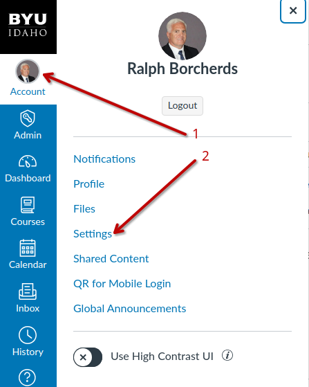
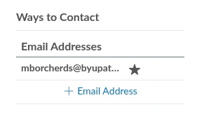

How to verify your email address for Microsoft Teams Access Como verificar seu endereço de e-mail para acesso ao Microsoft Teams Cómo verificar su dirección de correo electrónico para el acceso a Microsoft Teams
This is only for students who are having trouble accessing Microsoft Teams. Isso é apenas para estudantes que estão tendo problemas para acessar o Microsoft Teams. Esto es solo para estudiantes que están teniendo problemas para acceder a Microsoft Teams.
All my help starting in week 2 will be in MS Teams only. Toda a minha ajuda a partir da semana 2 será apenas no MS Teams. Toda mi ayuda a partir de la semana 2 será únicamente en MS Teams.
To change your default email address: Para alterar seu endereço de e-mail padrão: Para cambiar su dirección de correo electrónico predeterminada:

then in the top right corner, you will see where to add your BYU Pathway email address. então, no canto superior direito, você verá onde adicionar seu endereço de e-mail da BYU Pathway. luego, en la esquina superior derecha, verá dónde agregar su dirección de correo electrónico de BYU Pathway.

Then please watch this short 3-minute video on how to verify your email. Assista a este vídeo curto de 3 minutos sobre como verificar seu e-mail. Vea este breve video de 3 minutos sobre cómo verificar su correo electrónico.
If you get an error on any of this then let me know. Se você receber algum erro em qualquer uma dessas etapas, me avise. Si recibe algún error en cualquiera de estos pasos, avíseme.